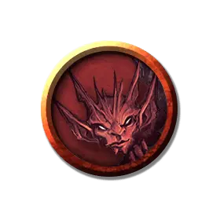

Маджесто
Majesto
Крошечное Исчадие (Дьявол, Перевертыш), законно-злое, именной НИП

Класс Доспеха 13
Хиты 10 (3к4 + 3)
Скорость 20 футов, летая 40 футов
| мод | спас | ||
|---|---|---|---|
| СИЛ | 6 | −2 | −2 |
| ЛОВ | 17 | +3 | +3 |
| ТЕЛ | 13 | +1 | +1 |
| мод | спас | ||
|---|---|---|---|
| ИНТ | 11 | +0 | +0 |
| МДР | 12 | +1 | +1 |
| ХАР | 14 | +2 | +2 |
Навыки Обман +4, Проницательность +3, Скрытность +5, Убеждение +4
Сопротивление урону холод; дробящий, колющий, рубящий от немагических атак, кроме нанесённых посеребрённым оружием
Иммунитет к урону огонь, яд
Иммунитет к состояниям отравление
Чувства тёмное зрение 120 футов, пассивное Восприятие 11
Языки Общий, Инфернальный
Опасность 1 (200 опыта)
Бонус мастерства +2
Особенности
Перевертыш. Маджесто может действием принять звериный облик, напоминающий ворона (20 футов, летая 60 футов), крысу (скорость 20 футов) или паука (20 футов, лазая 20 футов), или принять свой истинный облик. Во всех обликах его статистика остается той же самой, исключая указанные изменения скорости. Все несомое и носимое им снаряжение не превращается. Он принимает свой истинный облик, если умирает.
Дьявольское зрение. Магическая тьма не мешает темному зрению Маджесто.
Сопротивление магии. Маджесто совершает с преимуществом спасброски от заклинаний и прочих магических эффектов.
Действия
Жало (в зверином облике Укус). Рукопашная атака оружием: +5 к попаданию, досягаемость 5 футов, одна цель. Попадание: Колющий урон 5 (1к4 + 3), и цель должна совершить спасбросок Телосложения Сл 11, получая урон ядом 10 (3к6) при провале, или половину этого урона при успехе.
Невидимость. Маджесто магическим образом становится невидимым, пока не атакует или не утратит концентрацию (как при концентрации на заклинании). Все снаряжение, которое бес несет или носит, становится невидимым вместе с ним.
Описание
Ручной бес Леди Фионы Вахтер.
Бесы могут быть замечены повсеместно на Нижних Планах. Они работают на побегушках у дьявольских господ, шпионят за конкурентами, а также вводят в заблуждение и подстрекают смертных. Бесы будут с гордостью служить своим хозяевам, но на них нельзя положиться, если задача должна быть выполнена эффективно и быстро.
Бес может принимать животный облик по своему желанию, но в естественном состоянии он напоминает крохотного краснокожего гуманоида с колючим хвостом, маленькими рожками и кожаными крыльями. Они нападают из невидимости, ударяя своим ядовитым жалом.
См. дополнительно статью: "Бестиарий: Дьяволы"